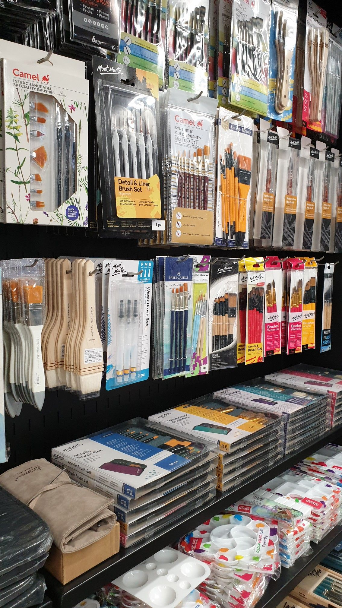
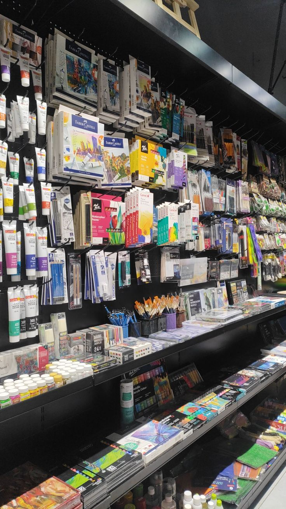
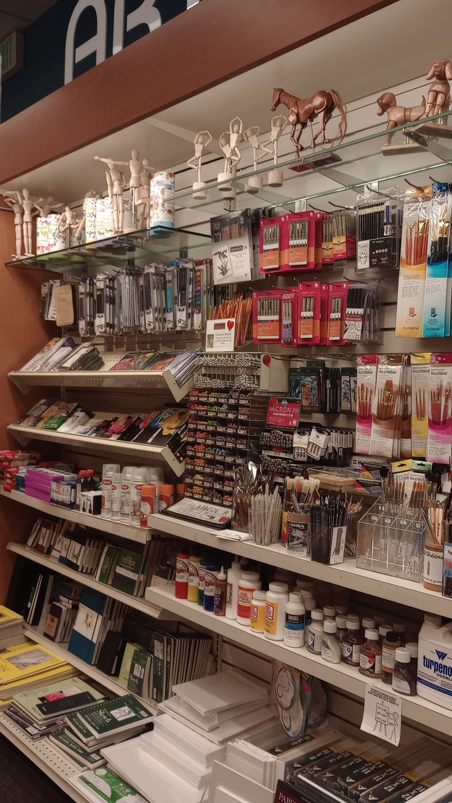
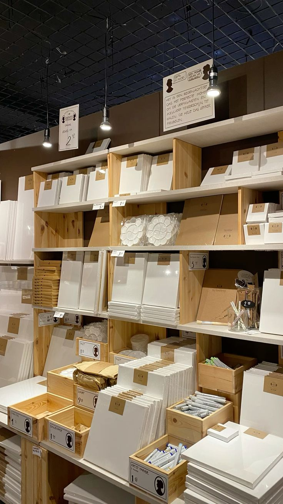

Basic Drawing Materials
The most common materials used for drawing include:
- Pencils
- Paper
- Erasers
- Brushes
- Canvas




These materials are used by both beginner and professional artists. Choosing good quality tools can improve drawing results.